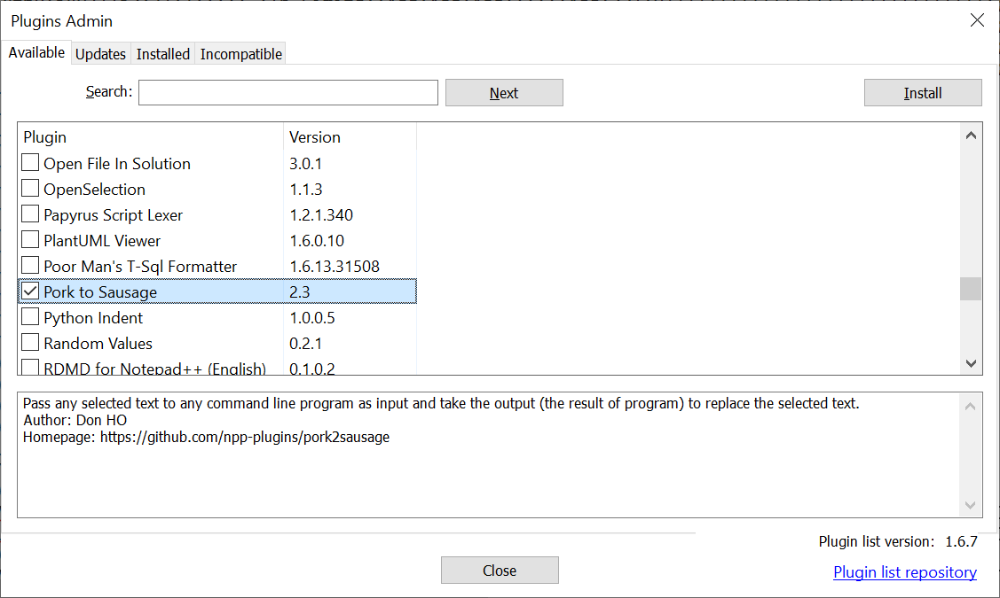
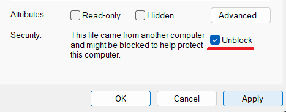

Notepad++ is very extensible using so called plugins. Plugins are small or big additions to Notepad++ to enhance its functionality. Notepad++ comes bundled with a few plugins (when using the installer, you can choose which ones to add), but you can always add your own or remove some. The plugins are located in the Plugins directory in the main Notepad++ installation directory. They are DLL files and simply removing or adding them is enough.
How to install a plugin
Install using Plugins Admin
The Plugins Admin allows you to easily install plugins that are in the Plugins List. To do so, place a check mark next to the Plugin(s) you wish to install, then select the Install button. (If you just click on the name of the plugin, without placing a check mark in the checkbox, it will give you information on the plugin, but it will not allow you to click the Install button.)

The Plugins Admin has four tabs:
- Available ⇒ Shows plugins you haven’t yet installed, and gives an Install button
- Updates ⇒ Shows plugins you have installed but that Plugins Admin knows have updates available, and gives an Update button
- Installed ⇒ Shows plugins you have installed, and gives a Remove button
- Incompatible ⇒ Shows plugins you had previously installed but are no longer compatible with Notepad++:
- check with that plugin’s website to see if they’ve released a version that is compatible that just hasn’t made it to Plugins Admin yet
The Plugins Admin window also shows the Plugin List version and links to the Plugin List repository (new to v8.4.6).
Install plugin manually
If the plugin you want to install is not listed in the Plugins Admin, you may still install it manually. The plugin DLL file should be placed in the plugins subfolder of the Notepad++ Install Folder, under the subfolder with the same name of plugin binary name without file extension.
For example, if the plugin you want to install is named myAwesomePlugin.dll,
you should install it with one of the following paths:
%PROGRAMFILES%\Notepad++\plugins\myAwesomePlugin\myAwesomePlugin.dll⇒ normal 64bit installation%PROGRAMFILES(x86)%\Notepad++\plugins\myAwesomePlugin\myAwesomePlugin.dll⇒ normal 32bit installation<portable notepad++ directory>\plugins\myAwesomePlugin\myAwesomePlugin.dll⇒ portable edition
Once you installed the plugin, you can use (and you may configure) it via the menu “Plugins”.
If you are installing a plugin manually, please check the instructions or other documentation for that specific plugin, to see if you need to put other files in appropriate locations.
Note: The Windows OS instinctively mistrusts DLLs from the internet (for very good reasons), and will not allow applications (like Notepad++) use that DLL. Assuming you trust the source of the DLL: Before starting Notepad++ and after downloading and manually installing a plugin in the right location, you need to right-click the DLL and visit the Properties context menu; if the Unblock option is shown, then click the checkbox and click Apply, then OK; this will unblock the DLL so that Windows will allow Notepad++ to use it.

Install plugin using Settings > Import > Import plugin(s)
This takes a single DLL and puts it in the right directory, then tells you that you have to restart; if you do not manually exit Notepad++ (File > Exit or equivalent) and then restart Notepad++ from your shortcut or Start Menu, the plugin will not be visible in the Plugins menu.
Note: To clarify, this only imports a single DLL file. If your plugin has other config files or documentation files or additional DLLs or resource files, this method will not put those files in the right place, and then the plugin will not fully function. Only use this menu to install the plugin if your plugin only has the single DLL in the zipfile.
Permissions
If you do not have write permission for the Notepad++ program directory hierarchy or at least the Plugins\
subdirectory, you will need to get “elevated permission”: If you are using Notepad++'s Plugins Admin or
Import Plugins commands to install the plugin, you may need to re-run Notepad++ with Windows’ “Run as Administrator”
feature before doing the installation; if you are doing a manual installation, Windows may pop up the UAC dialog
to get permission to write the file when you try to copy it into the right directory.
How to develop a plugin
Getting started
Here are the instructions to make your first Notepad++ plugin in less than 10 minutes, by following 6 steps:
- Download and unzip the latest release of Notepad++ Plugin Template.
- Open
NppPluginTemplate.vcprojin your Visual Studio. - Define your plugin name in
PluginDefinition.h - Define your plugin commands number in
PluginDefinition.h - Customize plugin commands names and associated function name (and the other stuff, optional) in
PluginDefinition.cpp. - Define the associated functions.
You are guided by the following comments in both the PluginDefinition.h and PluginDefinition.cpp files:
//-- STEP 1. DEFINE YOUR PLUGIN NAME --//
//-- STEP 2. DEFINE YOUR PLUGIN COMMAND NUMBER --//
//-- STEP 3. CUSTOMIZE YOUR PLUGIN COMMANDS --//
//-- STEP 4. DEFINE YOUR ASSOCIATED FUNCTIONS --//
A good sample illustrates better the whole picture than a detailed documentation. You can check Notepad++ Plugin Demo to learn how to make some commands more complex.
However, knowledge of the Notepad++ plugin system is required, if you want to accomplish some sophisticated plugin commands.
You can visit the Plugin development forum for any technical questions/answers and the announcement of your new plugin.
In other languages
- Ada
- C++
- Official - This template is maintained by the developer of Notepad++.
- Docking Dialogue Interface - ThosRTanner created a variant of a C++ template that helps clarify how to use a docking dialog, and gives an example plugin using that template.
- C#
- NotepadPlusPlusPluginPack.Net - User “kbilsted” was the original author/maintainer of this pack. However, as of Jan 2024, this version of the plugin pack is “archived” and unmaintained.
- NppCSharpPluginPack - Mark Olson’s fork of the original pack, with improvements and active maintenance (as of Jan 2024).
- D
- Delphi:
- Original (ANSI/UNICODE)
- Modern (32-bit/64-bit): This version has the headers necessary to work with Notepad++ v8.3.3 and newer.
Header Files
Whether you start from one of the templates above, or are making a new version of a plugin or copying from an existing plugin as your starting point, you should always check the Notepad++ repository for the up-to-date copies of the message header files (Notepad_plus_msgs.h and Scintilla.h, plus the Sci_Position.h header required by Scintilla.h): Those files may have been updated compared to the copy that was in your template or previous plugin version, and you should always start from the most recent version of those headers.
Building a lexer plugin
A lexer plugin is a kind of extension compared to a normal plugin, i.e. in addition to all the functions already mentioned, additional ones have to be exported and also an XML file defining the styles has to be generated.
Notepad++ v8.4 and newer
Notepad++ has transitioned to the ILexer5 interface as of Notepad++ v8.4. A lexer plugin needs to define all methods of this interface to ensure a smooth interaction.
The lexer functions to be exported by the plugin are
- GetLexerCount
- GetLexerName
- CreateLexer
The Notepad++ Community Forum has a discussion on how to “Make External Lexer Plugin work with v8.4".
If you are starting with an ILexer4 lexer defined as below, to convert to ILexer5, you should update Scintilla headers to Scintilla5, and add a CreateLexer function that returns the pointer to the ILexer5 interface. In the future, Notepad++ may add support for the GetLibraryPropertyNames, SetLibraryProperty and GetNameSpace functions; if lexer-plugin developers find a good reason and want that support, they should make an official feature request.
- CreateLexer
(typedef ILexer5 *(EXT_LEXER_DECL *CreateLexer)(const char *name);)
Args: name
Return: Pointer to ILexer5 object
Description:
CreateLexer is the main call that will create a lexer for a particular language.
The returned lexer can then be set as the current lexer in Scintilla by calling SCI_SETILEXER.
-
GetLexerName
- As described for ILexer4, below.
-
GetLexerCount
- As described for ILexer4, below.
Notepad++ v8.3.3 and earlier
Notepad++ supported only the ILexer4 interface up through Notepad++ v8.3.3. A lexer should define all methods of this interface to ensure a smooth interaction.
The additional lexer functions to be exported by the plugin are
- GetLexerCount
- GetLexerName
- GetLexerStatusText
- GetLexerFactory
Unlike the previous functions, these must be exported as stdcall calling convention.
- GetLexerCount
(typedef int (EXT_LEXER_DECL *GetLexerCountFn)();)
Args: none
Return: 32bit signed integer
Description:
A Lexer_Plugin can contain multiple lexers, so GetLexerCount returns the
number of defined lexers in this plugin. Mostly this will be 1.
- GetLexerName
(typedef void (EXT_LEXER_DECL *GetLexerNameFn)(unsigned int index, char *name, int buflength);)
Args:
- Index
- name
- buflength
Return: none
Description:
This function should return the name which should be displayed in the LanguageMenu.
If more than one lexer is contained in a plugin, this function will be called accordingly often
and the respective lexer is queried via index.
Name is a pointer to the memory area allocated by Notepad++.
This name should be encoded as an 8bit string using the current Windows codepage.
The size is given by buflength.
- GetLexerStatusText
(typedef void (EXT_LEXER_DECL *GetLexerStatusTextFn)(unsigned int Index, TCHAR *desc, int buflength);)
Args:
- Index
- name
- buflength
Return: none
Description:
This function should return the description to be displayed in the first field of the status line.
The parameters are to be treated in the same way as in the GetLexerName function, except for
the name parameter, which requires a string encoded with UTF-16.
- GetLexerFactory
(typedef LexerFactoryFunction(EXT_LEXER_DECL *GetLexerFactoryFunction)(unsigned int Index);)
Args:
- Index
Return: function pointer
Description:
This function returns a function pointer that returns a pointer to an implementation of the ILexer4 interface.
If the lexer is written in Cpp, this means you create a class with all virtual methods of the ILexer4 interface.
If another programming language is used to create the Lexer_Plugin this means that you create a fixed array with voidptr, pointing to the methods to be implemented, and assign this to a variable from which you return the pointer.
Example of a ILexer4 implementation in Pseudocode: (Note: The C-style comments here are for reference only)
Function GetLexerFactory(index)
return LexerFactoryImplementation
Function LexerFactoryImplementation()
ILexer4[0] = voidptr(version) // virtual int SCI_METHOD Version() const = 0;
ILexer4[1] = voidptr(release) // virtual void SCI_METHOD Release() = 0;
ILexer4[2] = voidptr(property_names) // virtual const char * SCI_METHOD PropertyNames() = 0;
ILexer4[3] = voidptr(property_type) // virtual int SCI_METHOD PropertyType(const char *name) = 0;
ILexer4[4] = voidptr(describe_property) // virtual const char * SCI_METHOD DescribeProperty(const char *name) = 0;
ILexer4[5] = voidptr(property_set) // virtual Sci_Position SCI_METHOD PropertySet(const char *key, const char *val) = 0;
ILexer4[6] = voidptr(describe_word_list_sets) // virtual const char * SCI_METHOD DescribeWordListSets() = 0;
ILexer4[7] = voidptr(word_list_set) // virtual Sci_Position SCI_METHOD WordListSet(int n, const char *wl) = 0;
ILexer4[8] = voidptr(lex) // virtual void SCI_METHOD Lex(Sci_PositionU startPos, Sci_Position lengthDoc, int initStyle, IDocument *pAccess) = 0;
ILexer4[9] = voidptr(fold) // virtual void SCI_METHOD Fold(Sci_PositionU startPos, Sci_Position lengthDoc, int initStyle, IDocument *pAccess) = 0;
ILexer4[10] = voidptr(private_call) // virtual void * SCI_METHOD PrivateCall(int operation, void *pointer) = 0;
ILexer4[11] = voidptr(line_end_types_supported) // virtual int SCI_METHOD LineEndTypesSupported() = 0;
ILexer4[12] = voidptr(allocate_sub_styles) // virtual int SCI_METHOD AllocateSubStyles(int styleBase, int numberStyles) = 0;
ILexer4[13] = voidptr(sub_styles_start) // virtual int SCI_METHOD SubStylesStart(int styleBase) = 0;
ILexer4[14] = voidptr(sub_styles_length) // virtual int SCI_METHOD SubStylesLength(int styleBase) = 0;
ILexer4[15] = voidptr(style_from_sub_style) // virtual int SCI_METHOD StyleFromSubStyle(int subStyle) = 0;
ILexer4[16] = voidptr(primary_style_from_style) // virtual int SCI_METHOD PrimaryStyleFromStyle(int style) = 0;
ILexer4[17] = voidptr(free_sub_styles) // virtual void SCI_METHOD FreeSubStyles() = 0;
ILexer4[18] = voidptr(set_identifiers) // virtual void SCI_METHOD SetIdentifiers(int style, const char *identifiers) = 0;
ILexer4[19] = voidptr(distance_to_secondary_styles) // virtual int SCI_METHOD DistanceToSecondaryStyles() = 0;
ILexer4[20] = voidptr(get_sub_style_bases) // virtual const char * SCI_METHOD GetSubStyleBases() = 0;
ILexer4[21] = voidptr(named_styles) // virtual int SCI_METHOD NamedStyles() = 0;
ILexer4[22] = voidptr(name_of_style) // virtual const char * SCI_METHOD NameOfStyle(int style) = 0;
ILexer4[23] = voidptr(tags_of_style) // virtual const char * SCI_METHOD TagsOfStyle(int style) = 0;
ILexer4[24] = voidptr(description_of_style) // virtual const char * SCI_METHOD DescriptionOfStyle(int style) = 0;
ilexer = Pointer(ILexer4)
return Pointer(ilexer)
Function version()
...
Function release()
...
Function property_names()
...
The most important functions a lexer has to provide are Lex, Fold and WordListSet. As the names suggest, Lex is called by Notepad++ (actually Scintilla) to color the current buffer and then Fold to define any fold points. WordListSet is called depending on how many keyword groups have been defined in the styles XML file and each time changes are made via the Notepad++ StyleDialog. More information about these and all other methods can be obtained from https://www.scintilla.org/ScintillaDoc.html#SCI_LOADLEXERLIBRARY.
Creating the Lexer Styles XML file.
In order for Notepad++ to know how to color which style, an XML file with the same name as the lexer must be created in addition to the original lexer dll. E.g. if the Lexer plugin is called MyNewLexer.dll, the XML file must be called MyNewLexer.xml and must be present in the plugin config directory.
The XML file must have the following layout.
<?xml version="1.0" encoding="UTF-8" ?>
<NotepadPlus>
<Languages>
<Language name="NAME_OF_THE_LEXER" ext="EXTENSIONS_USED_TO_IDENTIFY_THE_LEXER" commentLine="//" commentStart="/*" commentEnd="*/">
<Keywords name="instre1">if then else ...</Keywords>
<Keywords name="instre2">...</Keywords>
<Keywords name="type1">...</Keywords>
<Keywords name="type2">...</Keywords>
<Keywords name="type3">...</Keywords>
<Keywords name="type4">...</Keywords>
<Keywords name="type5" />
<Keywords name="type6" />
</Language>
</Languages>
<LexerStyles>
<LexerType name="NAME_OF_THE_LEXER" desc="DESCRIPTION_OF_THE_LEXER_SHOWN_IN_STATUSBAR" ext="" excluded="no">
<WordsStyle styleID="0" name="Default" fgColor="000000" bgColor="FFFFFF" colorStyle="0" fontName="" fontStyle="0" fontSize="" />
<WordsStyle styleID="1" name="WHATEVER" fgColor="FF0000" bgColor="FFFFFF" colorStyle="1" fontName="" fontStyle="0" fontSize="" />
<WordsStyle styleID="2" name="SOMETHING_DIFFERENT" fgColor="00FF00" bgColor="FFFFFF" colorStyle="1" fontName="" fontStyle="0" fontSize="" />
<WordsStyle styleID="3" name="..." fgColor="..." bgColor="FFFFFF" colorStyle="1" fontName="" fontStyle="0" fontSize="" />
<WordsStyle styleID="4" name="..." fgColor="..." bgColor="FFFFFF" colorStyle="1" fontName="" fontStyle="0" fontSize="" />
<WordsStyle styleID="5" name="..." fgColor="..." bgColor="FFFFFF" colorStyle="1" fontName="" fontStyle="0" fontSize="" />
<WordsStyle styleID="6" name="..." fgColor="..." bgColor="FFFFFF" colorStyle="1" fontName="" fontStyle="0" keywordClass="instre1" fontSize="" />
<WordsStyle styleID="7" name="..." fgColor="..." bgColor="FFFFFF" colorStyle="1" fontName="" fontStyle="0" keywordClass="instre2" fontSize="" />
<WordsStyle styleID="8" name="..." fgColor="..." bgColor="FFFFFF" colorStyle="1" fontName="" fontStyle="0" keywordClass="type1" fontSize="" />
<WordsStyle styleID="9" name="..." fgColor="..." bgColor="FFFFFF" colorStyle="1" fontName="" fontStyle="0" keywordClass="type2" />
<WordsStyle styleID="10" name="..." fgColor="..." bgColor="FFFFFF" colorStyle="1" fontName="" fontStyle="0" keywordClass="type3" />
<WordsStyle styleID="11" name="..." fgColor="..." bgColor="FFFFFF" colorStyle="1" fontName="" fontStyle="0" keywordClass="type4" />
<WordsStyle styleID="12" name="..." fgColor="..." bgColor="FFFFFF" colorStyle="1" fontName="" fontStyle="0" keywordClass="type5" />
<WordsStyle styleID="13" name="..." fgColor="..." bgColor="FFFFFF" colorStyle="1" fontName="" fontStyle="0" keywordClass="type6" />
</LexerType>
</LexerStyles>
</NotepadPlus>
Currently, a maximum of 8 keyword groups can be defined in
The attribute ext in
With this everything is done. Actually quite simple. But, as usual in software development, there are also some not so obvious pitfalls.
Tips and Tricks
-
Notepad++ uses 2 views with different scintilla instances. To identify which instance should be handled with which document at the moment, pAccess can be used in Lex and Fold. Hint: It is possible to scroll an inactive instance and thus trigger Lex and Fold callbacks.
-
API XML files, which are used for autocompletion by Notepad++, as well as funtionlist XML files can, currently, not be used by plugin lexers. So it makes sense to implement these functionalities as well.
-
GetLexerName and GetLexerCount are called twice. Once from Notepad++ directly and once from Scintilla. Each with different buffer length.
-
When Notepad++ loads the Lexer plugin it is expected that the corresponding styles XML file is also present in the plugin config directory. Since, for whatever reason, this file might not be present, it is a good idea to check this in the setInfo callback and to react accordingly
Plugins Admin
Built-in Plugins Admin shows the list of available plugins, allows users to install new plugins and to update/remove installed plugins. It needs Plugin List (see next section) to work.
Plugin List
A list in JSON format wrapped in a dll contains the most poplular Notepad++ plugins. This list which is maintained by the team, is also an open source project hosted in the GitHub: https://github.com/notepad-plus-plus/nppPluginList/. Any plugin is welcome to join in the list.
Test your plugins locally
For testing your plugin for listing, installation, removal and update under
Plugin Admin, you need Notepad++ binary in debug mode
32-bit
or 64-bit,
the latest version of wingup
32-bit
or
64-bit
and nppPluginList.json (you should rename it from pl.x64.json or pl.x86.json,
according your plugin’s architecture). Replace notepad++.exe and GUP.exe of your
Notepad++ installation by downloaded ones, copy pl.x64.json or pl.x86.json to
<NPP_INST_DIR>\plugins\Config\nppPluginList.json, then
you’re all set - the menu item Plugins Admin will be under menu Plugins of your
debug mode notepad++.exe. Launch this command will launch the Plugins Admin dialog
and the rest should be intuitive.
Rules for adding your plugins into list
-
Architecture: your 32-bits plugin should be added to pl.x86.json, 64-bits plugin should be added to pl.x64.json.
-
Unicity: the value of folder-name of your plugin should be unique in the list. it means if there’s already another same name plugin in the list, you have to rename your plugin’s folder-name (and your plugin). Keep in mind that your plugin binary name (w/o the extension .dll) should be always the same as the folder-name, otherwise your plugins won’t be loaded.
-
Security: the value of id is plugin package’s (zip file) finger print in SHA-256. This id is checked with the downloaded dll to avoid MITM. You can use Notepad++ to get your plugin’s SHA-256 hash (Menu: Tools > SHA-256 > Generate from files…) or some online sha256 generators.
-
Update info: the value of version is exact the version of your plugin binary version which you want to be deployed. This version will compare with installed plugin’s version to decide if update should be applied. Please check Microsoft’s document about binary version for setting the version correctly onto your DLL.
-
Download location: the value of repository is the URL where Plugin Admin can download the plugin to install/update it.
-
Packaging: Only zip package is supported. Your plugin (DLL) should have the same name as the folder-name and the plugin DLL file should be placed at the root level of the ZIP file. Otherwise Plugin Admin won’t install it. Any additionals files (DLL or data) can be placed at the root level or in an arbitrary subfolder.
-
Compatibility: In March 2022, two new parameters were added to the JSON file format, to indicate your plugin’s compatibility with various versions of Notepad++, called
npp-compatible-versionsandold-versions-compatibility.-
The first will have the format
"npp-compatible-versions": "[minimum,maximum]",where minimum and maximum are version numbers; if minimum is empty, it will mean that the plugin will work with any version of Notepad++ before (and including) the maximum; if maximum is empty, it will mean that the plugin will work with any version of Notepad++ after (and including) the minimum; you cannot set both empty. The version numbers will be dotted versions, such as
8.0,8.2,8.3.1. If you have spaces anywhere between the[]brackets, it will not work.example meaning [7.7,8.2.1]The plugin is known to work with v7.7 thru v8.2.1 [,8.2.1]The plugin is known to work with any version up thru v8.2.1 [8.3.1,]The plugin is known to work with v8.3.1 and beyond [ 7.7,8.2.1]ERROR: space after the [[7.7 ,8.2.1]ERROR: space before the ,[8.3.1, ]ERROR: space after the ,[7.7,8.2.1 ]ERROR: space before the ][,]ERROR: must have at least one of minimum and maximum You can see examples of working values in the other entries in the JSON file.
-
The second will have the form
"old-versions-compatibility": "[pluginminimum,pluginmaximum][nppminimum,nppmaximum]",The
old-versions-compatibilitywill explain the ranges of versions for your plugin that worked with older versions of Notepad++. This is essentially giving the last pair of Plugin & Notepad++ versions that should work.For example, if you are releasing your plugin’s version 2.7 to be able to work with Notepad++ v8.3.1 and newer, and if your old plugin versions 1 through 2.6 worked up through Notepad++ v8.2.1, the two attributes in the JSON should look like:
"version": "2.7", "npp-compatible-versions": "[8.3.1,]", "old-versions-compatibility": "[,2.6][,8.2.1]",(Where the first line gives the recent plugin version, the second line is telling what versions of Notepad++ the new plugin works with, and the third line explains that older versions of your plugin work with Notepad++ versions up through and including 8.2.1.)
Similar to npp-compatible-versions, you cannot have spaces inside or between the
[]. You may leave out the pluginminimum and/or nppminimum, as shown in the examples, but it likely doesn’t make sense to leave out either of the maximums.
If both of those attributes are missing, it is interpreted that your plugin has no API calls that are incompatible with any version of Notepad++, and it will run with and not crash any version of Notepad++. Before submitting a plugin without those attributes, please be certain of the historical compatibility. Thank you.
-
Do your PR to join plugin list
Once your test has been done, and everything is ok, you can fork and do your PR on:
https://github.com/notepad-plus-plus/nppPluginList/. Only the json part you should
modify. The json file will be built into the a binary (nppPluginList.dll), which will
be signed (for thes sake of security) and be included in the official distribution.
Questions & support
Ask your questions here: https://notepad-plus-plus.org/community/topic/16789/support-for-plugins-admin-npppluginlist-round-2